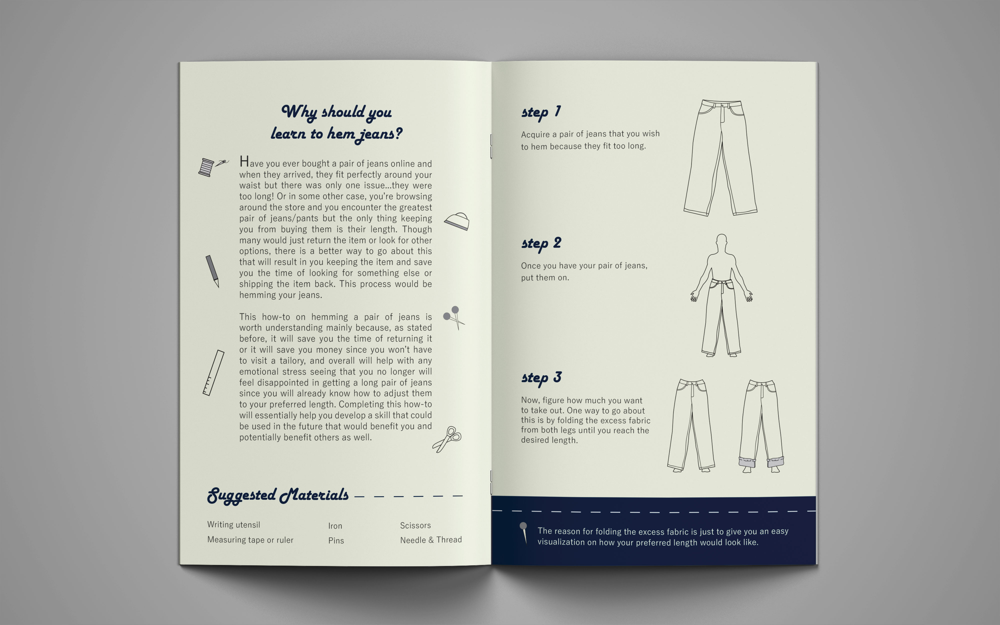
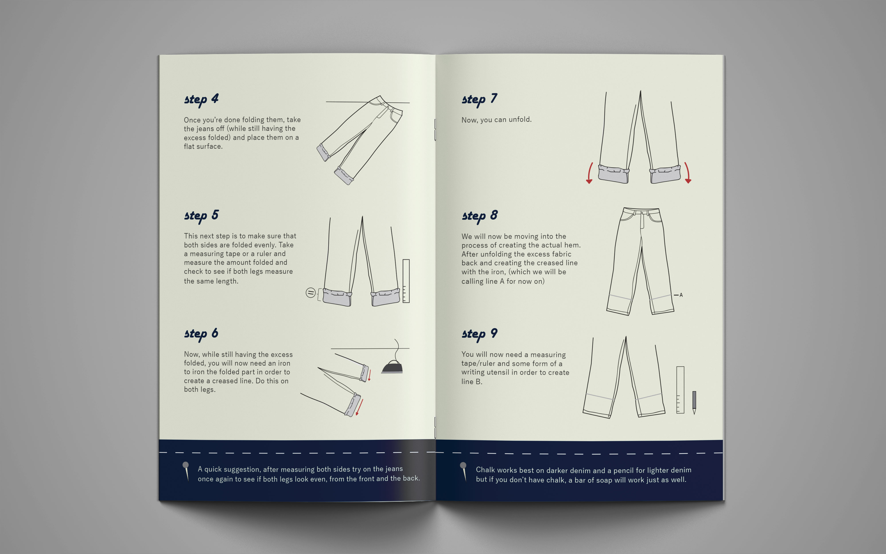
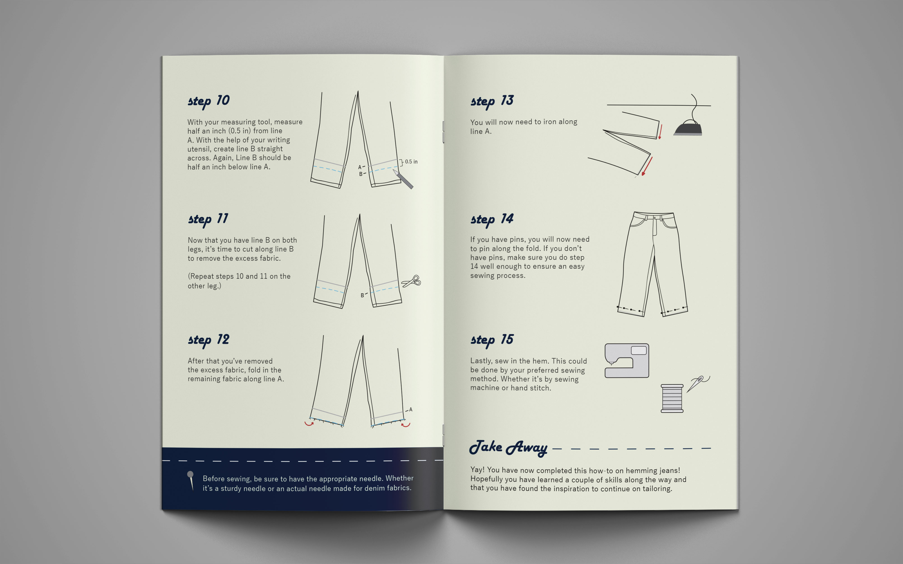
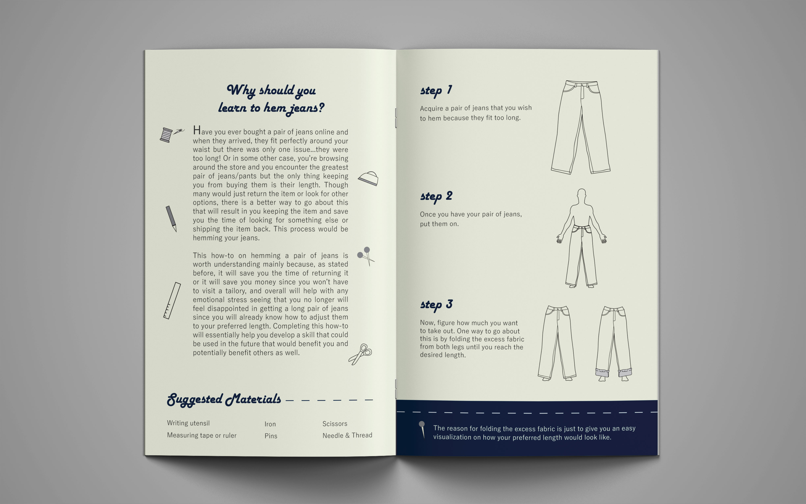
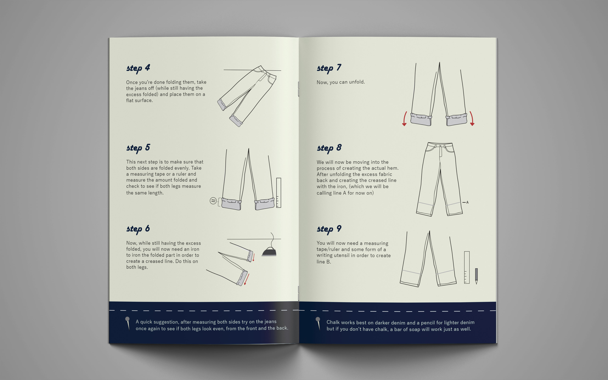
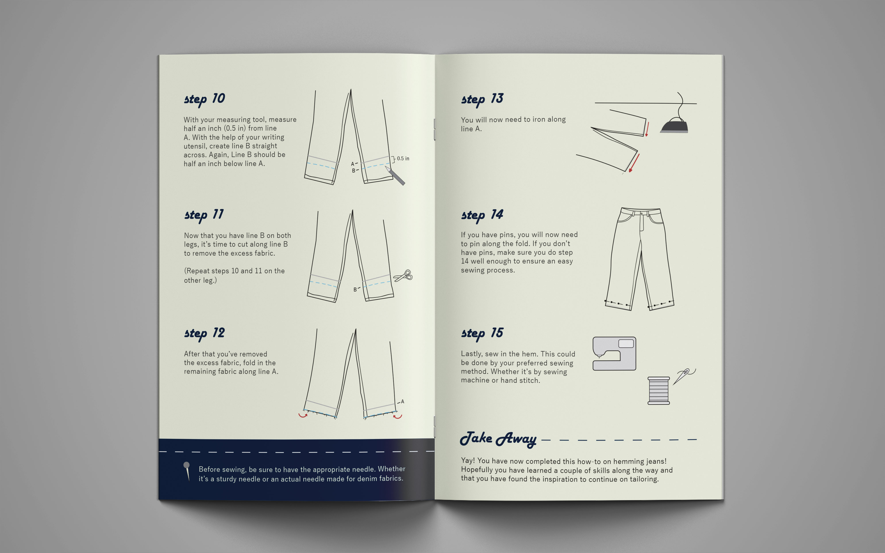

"HOW-TO" BOOKLET
The main objective for this project was to create a visual tool that will communicate how to complete a task.
The first steps were to conduct visual research by carrying out and documenting behavioral observations of the actions, activities, of what we are trying to communicate.
After studying the visuals related to this "how-to" subject matter, and considering what form will be best to communicate this on, the final product resulted in the designs below.
 




